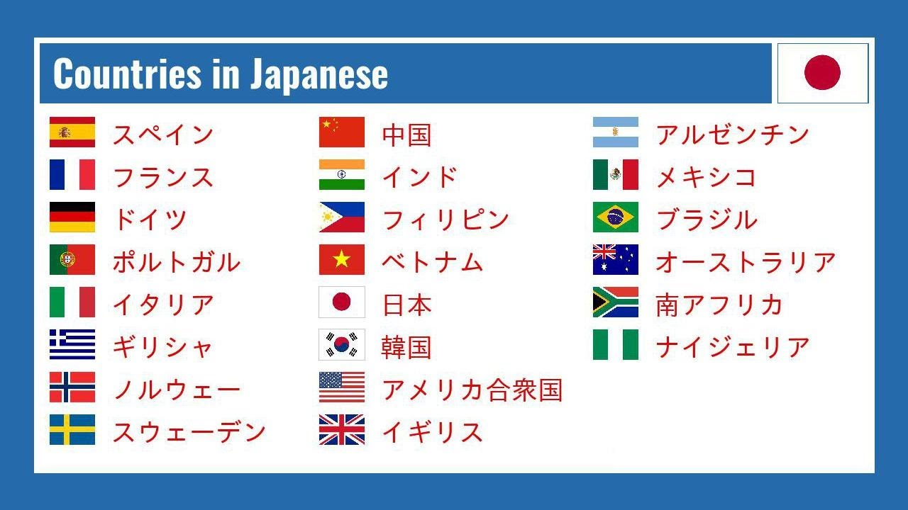

Countries
Countries, くに(kuni) or 国 are a pretty crucial aspect of learning Japanese. Most learn Japanese to travel to Japan, so it's important to know the names of the countries in Japanese. In this note, we will see the names of some countries in Japanese and how to say "from" a country.
List of Countries and Pronounciation
| Country | Japanese | Pronounciation |
|---|---|---|
| Japan | 日本 | にほん (Nihon) |
| China | 中国 | ちゅうごく (Chuugoku) |
| South Korea | 韓国 | かんこく (Kankoku) |
| United States | アメリカ | あめりか (Amerika) |
| Canada | カナダ | かなだ (Kanada) |
| France | フランス | ふらんす (Furansu) |
| Germany | ドイツ | どいつ (Doitsu) |
| Italy | イタリア | いたりあ (Itaria) |
| Spain | スペイン | すぺいん (Supein) |
| United Kingdom | イギリス | いぎりす (Igirisu) |
| India | インド | いんど (Indo) |
| Australia | オーストラリア | おーすとらりあ (Oosutoraria) |
| Brazil | ブラジル | ぶらじる (Burajiru) |
Conversation
Ending with じん(jin) or 人: Nationality
For example, にほんじん (日本人) means Japanese.
Ending with ご(go): Language
For example, にほんご (日本語) means Japanese language.
Talking about countries
To say you are from a country, you can use the following sentence structure:
[Country] kara kimashita
For example, にほん から きました means "I came from Japan".